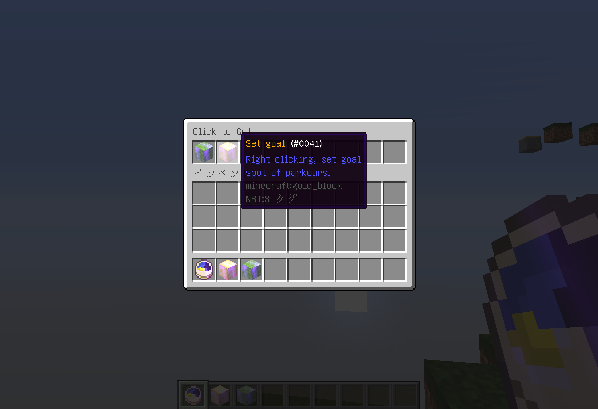
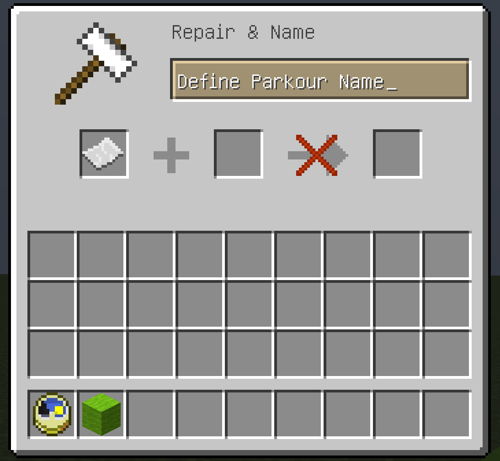
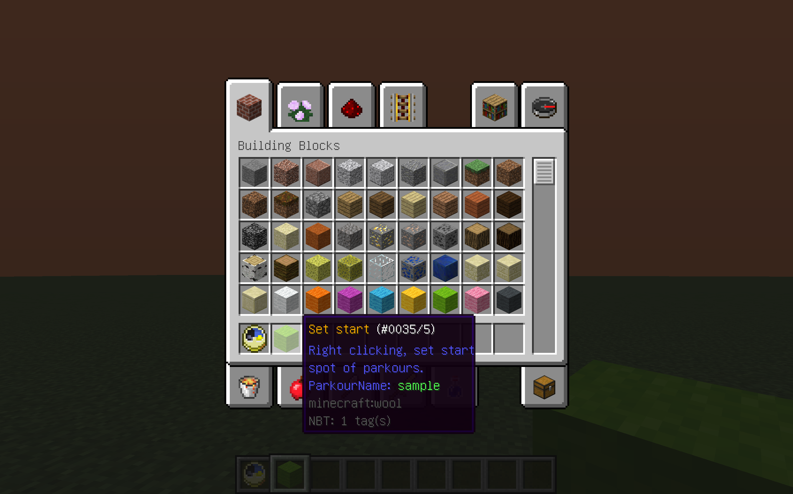

チュートリアル
コースを作る
デフォルトではOPも持っている人のみコースを作成できます。コースを作成するにはチェックポイントとスタート地点、ゴール地点を設置します。どのアイテムも複数設置可能です。OPを持っていることを確認してから/want creatorと打つと、creatorというアイテムが手に入ります。右クリックでGUIが開かれます。
このようなGUIが表示されましたかと思います。GUIの中のアイテムをクリックすると作成用アイテムが手に入ります。左からスタート地点を設置するためのもの、ゴール地点を設置するためのもの、チェックポイントを設置するためのものです。
コースに名前をつける
この項目は必須ではありませんが、タイムを記録する場合は名前を付ける必要があります。上の画像はset startを左クリックしたときに開かれるGUIです。パルクール名の設定はこのGUIで行います。
名前を付けることに成功すると、このようにset startのアイテムにカーソルを合せたときに表示されるloreからコース名が確認できます。この例ではsampleと設定しました。
コースの設置
GUIから手に入れたアイテムを右クリックで設置してください。setStartで設置した感圧版を踏むとインベントリが切り替わり、setGoalで設置した感圧版を踏むと元に戻ります。
ゴールを踏んだ時に戻る位置はバニラのコマンドの/setworldspawn ~ ~1 ~ などで設定した地点です。
コースの削除
コースはその座標がスタート/ゴール地点だという情報と、コースそのものに関わる作成日時や作者、タイムなどの情報とに分かれて管理されています。前者のデータは感圧版を削除すると自動的に削除されます。後者は全ての同名のスタート地点が削除されたときにのみ削除されます。
プレイ中の状態
プレイ中は前述の通りインベントリが切り替わるだけでなく、耐性と満腹度回復が付与されます。これらの効果はQuitアイテムを使うかゴールをすると取り除かれます。ダメージを受けない設定ではなく耐性にしたのはサボテンなどのダメージによるジャンプ力の向上を利用したアスレチックを作成できるようにするためです。 ただし、落下時のダメージについては無効にしてあります。落下のたびに足止めされることはありません。また、プレイ中に奈落に落ちた場合は最後のセーブポイントもしくはスタート地点にテレポートされます。ゴールの感圧版を踏んだ時にはクリアにかかったタイムがチャット欄に表示されます。このときプレイ時に踏んだスタート用の感圧版に名前が付けられていた場合は、ベストタイムと比較して表示されるメッセージが変わります。